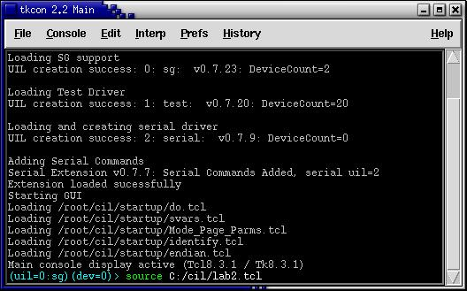
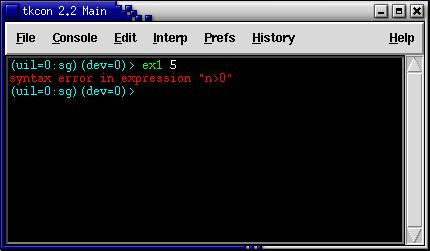
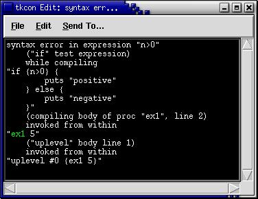

Right click on the link above and choose "Save As". Save the
file in the C:/CIL directory.
Next start Niagara. You will see a display similar to the following:

Next type source C:/cil/lab2.tcl,
as shown above. Note the use of forward slashes in filenames.
Backward slashes define escape sequences in TCL. To use them you
would need to double them up like this:
source C:\\cil\\lab2.tclIt is simply easier to stick with forward slashes (it also makes your scripts work in UNIX platforms). Now that your file is sourced, open lab2.tcl in your favorite text editor. This file has some bugs that you need to find. Here is the file for our reference:
puts "Sourcing lab 2"#----------------------------------------
# Test Script - This one should work
#----------------------------------------proc test1 {} {
puts "lab 2 was sourced successfully"
}#----------------------------------------
# Exercise 1 - Fix the problem
#----------------------------------------proc ex1 {n} {
if {n>0} {
puts "positive"
} else {
puts "negative"
}
}#----------------------------------------
# Exercise 2 - Fix the problem
#----------------------------------------proc ex2 {a b} {
if {$a+$b} {
puts "a+b is not zero"
}
else {
puts "a+b is zero"
}
}#----------------------------------------
# Exercise 3 - Fix the problem
#----------------------------------------proc ex3 {rows} {
for {set i 0} {$i < 10} {incr $i} {
for {set y 0} {$y < $rows} {incr $y} {
for {set x 0} {$x <= $y} {incr $x} {
puts -nonewline " "
}
puts "\\"
}
}
}#---------------------------------------------
# Exercise 4 - Rewrite ex #3 using while loops
# Here's a start:
#---------------------------------------------proc ex4 {rows} {
set i 0
while {$i < 10} {
for {set y 0} {$y < $rows} {incr $y} {
for {set x 0} {$x <= $y} {incr $x} {
puts -nonewline " "
}
puts "\\"
}
incr i
}
}#---------------------------------------------
# Exercise 5 - Rewrite ex #3 but make the
# zigzags go both ways (hint: incr y -1)
#---------------------------------------------proc ex5 {rows} {
}Start by typing:
test1You should see "lab2 was sourced successfully". Now for the first exercise. Type:
ex1 5This time you see an error, as shown below:
The error is in red. With your mouse pointer, click on the red text. A new window will appear that gives more information:

This window gives a stack trace of where the error occurred. At first the information looks confusing but, after you get used to it, the information can be helpful. The first line tells you exactly what TCL did not like and the following lines tell you the context of the error. This information can be helpful when debugging more complex programs. Note that "ex1" is is green. This means that you can click on the "ex1" to get even more information. Try it...Fix the problem and get the following to run successfully:
ex1 5Now to debug the other 4 exercises (all errors are small typos in the code). After debugging, the following inputs should run without errors:
ex1 -4
ex2 5 5Use the "click on red error" technique to help you in your debugging. Also remember that all non white text in the stack trace can be clicked on for more information...
ex2 5 -5ex3 5
ex3 10ex4 5
ex4 10ex5 5
ex5 10
Good Luck!